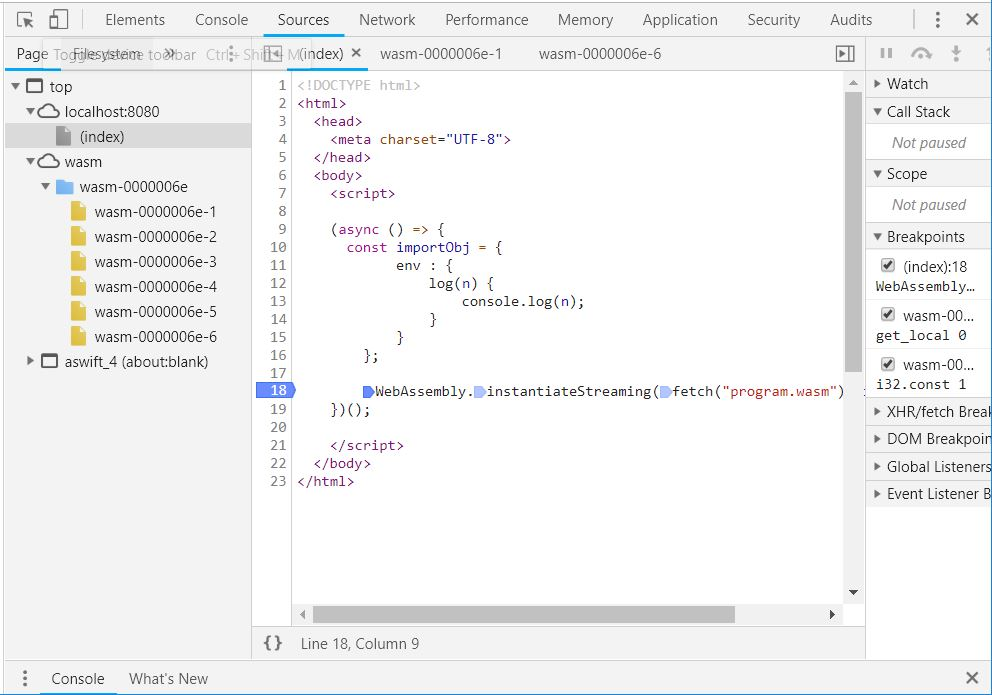

在瀏覽器上，想要對 WebAssembly 除錯的話，可以使用 Chrome 或 Firefox 上的開發者工具，這些工具會將 .wasm 反組譯回文字格式，雖然不是原本撰寫的程式，然而對除錯也有很大的幫助。
以 Chrome 為例，若要除錯〈實作陣列〉中的程式，可以點開 wasm 節點：
.wasm 中的函式被分為了數個部份顯示，看來是根據函式索引（匯入的 $log 是索引 0，因此不在列表之中），因此，若要在〈實作陣列〉中的 $main 下中斷點，可以點開索引 6 的部份：
設定中斷點的方式並沒有兩樣，因為這個範例，會在載入模組時就執行 $main，在重新整理頁面載入模組之後，就可以開始除錯了：

步進（Step in）、步出（Step out）等操作並沒有兩樣，留意到右邊的 Scope，在 Chrome 上，還能看到記憶體、區域變數、堆疊等內容，這在除錯時是非常有幫助的資訊，特別是在除錯記憶體內容時，沒有這個還真的很麻煩！
由於除錯的功能是整合在一起的，也可以在 JavaScript 設中斷點除錯，在流程需要執行 WebAssembly 時就會直接進入，不用分別對 .js 與 .wasm 除錯：
